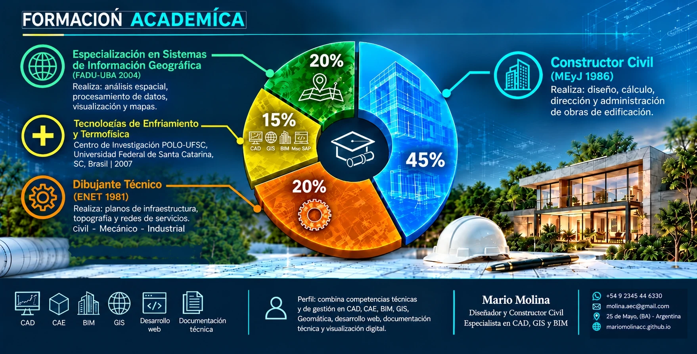
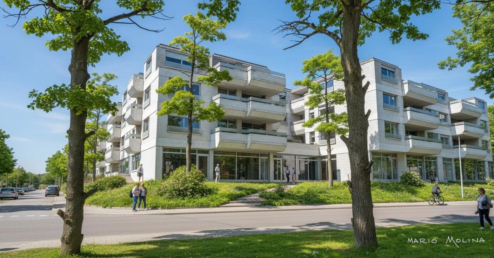
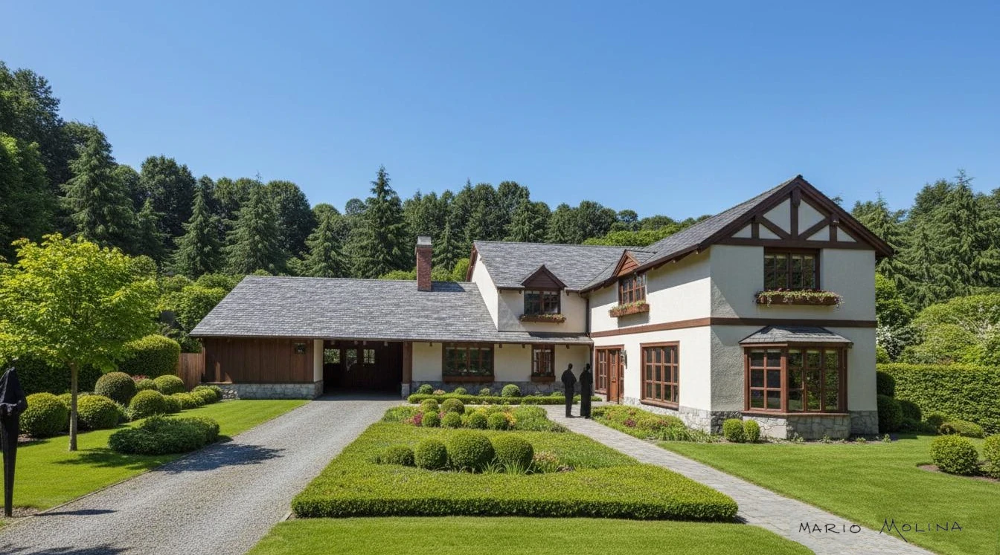
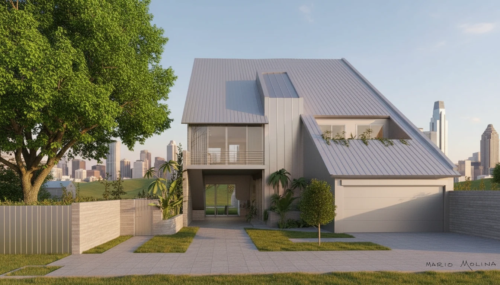

Mario Molina
Diseñador Civil / Constructor Civil
Planos · Diseño Arquitectónico · Dirección de Obras
Perfil profesional
Mario Molina es un diseñador y constructor civil, dibujante e ilustrador arquitectónico argentino, especializado en ingeniería digital y en integración de sistema CAD, CAE, GIS, BIM, GeoInformática y Desarrollo Web. Con más de 35 años de experiencia en ingeniería, arquitectura e industria para empresas multinacionales.
En su trayectoria, ha desempeñado los siguientes roles:
Diseñador Proyectista | 1989 - 2002: Desarrolla proyectos para empresas multinacionales lideres como — Arcor, Philips, Whirlpool, Peabody y Philco
—.
Gerente de Ingeniería | 2002 - 2010: Asume la Gerencia de Ingeniería en Philco , con resposabilidad sobre ingeniería, producción y operaciones. Reporta a la gerencia general.
Director de Proyectos y Obras | 2010 - 2022: Ha liderado proyectos de reconversión de activos industriales para firmas como Daewoo, NewSan y Midas.
Diseño y Dirección: Desde 2023 dirige el Estudio ScanLabb especializado en diseño, servicios digitales y desarrollo web.
Perfil y Experiencia
Trayectoria: Más de tres décadas de experiencia profesional en diseño y ejecución de infraestructuras, viviendas, oficinas, naves industriales y logísticas.
Servicios: Su campo de acción comprende el diseño, cálculo, dirección, administración de obras edilícias y sus instalaciones, hasta su habilitación legal.
Aptitud Legal y Técnica: Habilitación profesional para la firma de planos, dirección de obra, peritajes, tasaciones y gestión de permisos ante organismos publicos y privados.
Educación

❄️ Formación en Tecnologías de Enfriamiento y Termofísica
Centro de Investigación POLO-UFSC, Universidad Federal de Santa Catarina, SC, Brasil | 2007
Director de POLO-UFSC: Prof. Dr. Ing. Claudio Melo
Área de especialización: Programa de especialización en tecnologías de enfriamiento y termofísica para gerentes de ingeniería.
🌐 Especialización en Sistemas de Información Geográfica
Escuela de Posgrado, FADU - Universidad de Buenos Aires, Argentina | 2004
Área de especialización: Adquisición y procesamiento de datos geoespaciales, imágenes satelitales y
aéreas, —GNSS— y análisis espacial aplicado a la gestión del territorio.
🏛️ Constructor Civil
Instituto Superior de Educación Tecnológica - Buenos Aires - CABA | Título nacional MEyJ - 1986.
Campo de acción: El titulo lo habilita para: Diseñar, calcular, dirigir y administrar obras edilicias y sus
instalaciones. Realizar peritajes, tasaciones y brinda asesoramiento sobre materiales, tecnologías y sistemas constructivos.
Especialidad: Diseño Civil y Dirección de Obras.
📐 Dibujante Técnico
Escuela Técnica Nacional, ENET | 25 de Mayo, BA. | 1981.
Áreas de competencia: es el nexo entre la ingeniería y la fabricación, trabajando en tres áreas
principales:
Civil - crea planos de infraestructura, topografía y redes de servicios.
Mecánico - diseño de partes para automotriz, naval y metalmecánica.
Industrial - diseño de layouts de plantas, automatización eléctrica y sistemas de tuberías.
Gestión documental: Administra el sistema de información de la oficina, planta o empresa.
Mis Proyectos

🏛️ Edificio multifamiliar y comercial - Punta del Este

🏛️ Proyecto Casa Dufaur, San Isidro (BA)

🏛️ Proyecto Casa Ayacucho, San Isidro (BA)
Visualización 3D

Dibujo en Lápiz

Render de Día

Render de Noche
Servicios
Diseño Arquitectónico
Edificación Residencial y Comercial
Proyectos a medida
Diseño 3D Personalizado
Regularizaciones
Planos municipales y trámites
Dirección de obras
Supervisión y gerenciamiento
Mensura
Terrenos y edificaciones
Presupuestos
Sin cargo, sin compromiso